Learn to Code using JavaScript
8-DAY INTENSIVE COURSE TRAINING
 
Day 1
Morning Session
Welcome and Course Overview
Introduction to JavaScript: History, Importance, and Use Cases
Setting Up the Development Environment
JavaScript Syntax and Basics: Variables, Data Types, and Operators
Afternoon Session
Control Structures: Conditionals and Loops
Project 1 Kickoff: Start the Task Tracker Application
Interactive Coding Exercises and Q&A
Day 2
Morning Session
Functions: Declaration, Expressions, Arrow Functions, and Scope
Advanced Function Concepts: Closures, IIFE, and Callback Functions
Afternoon Session
Introduction to the DOM
Project 1: Enhance the Task Tracker Application
Hands-On Project: Implement Event Handling for Task Management
Day 3
Morning Session
Introduction to ES6+ Features: Let, Const, Template Literals, and Destructuring
Advanced ES6+ Features: Spread/Rest Operators, Default Parameters, and Modules
Afternoon Session
Introduction to OOP in JavaScript
Project 1: Refactor the Task Tracker Application using OOP Concepts
Hands-On Exercises: Implement CRUD Operations
Day 4
Morning Session
Understanding Asynchronous JavaScript: Callbacks, Promises, and Async/Await
Error Handling in Asynchronous Code
Afternoon Session
Working with APIs: Fetch API
Project 2 Kickoff: Start the Recipe Finder Application
Hands-On Project: Fetch Data from a Recipe API
Day 5
Morning Session
Continue with Fetch API and Handling Asynchronous Operations
Displaying API Data: Manipulating DOM Elements to Show Recipe Data
Afternoon Session
Project 2: Implement Advanced Features in the Recipe Finder Application
Error Handling for API Requests
Adding User Input to Search for Different Recipes
Interactive Coding Exercises and Q&A
Day 6
Morning Session
Deep Dive into Advanced ES6+ Features: Advanced Array Methods (map, filter, reduce)
Local Storage: Saving and Retrieving Data in the Browser
Afternoon Session
Project 1: Enhance the Task Tracker Application with Local Storage
Persisting Tasks Between Sessions
Project 2: Add Local Storage to the Recipe Finder Application
Saving Favorite Recipes or Recent Searches
Day 7
Morning Session
Testing JavaScript Applications: Introduction to Unit Testing
Debugging Techniques and Tools
Afternoon Session
JavaScript Best Practices and Code Optimization
Project Work: Write Tests for the Task Tracker and Recipe Finder Applications
Hands-On Exercises: Testing and Debugging the Applications
Day 8
Morning Session
Soft Skills for Developers: Effective Communication, Problem-Solving, and Teamwork
Career Guidance: Job Market Insights, Resume Building, and Interview Preparation
Afternoon Session
Final Projects: Complete and Polish the Task Tracker and Recipe Finder Applications
Presentation of Projects and Peer Review
Course Wrap-Up, Feedback, and Certificates